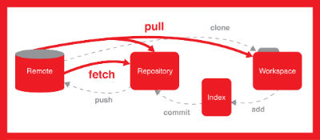
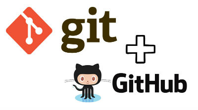

Git runs fast. Although what we're talking about here is just a few seconds to run a command, accumulating it in your daily routine is a big leap. It can save unnecessary waiting time and accomplish some other meaningful tasks.
How do you work when you can't connect to remote central repository? For a centralized version control system like Subversion or CVS, you can't work well if you don't connect to the central repository. If you use Git, almost everything can be done simply on your local machine. For example, submit, view your project history, merge or create branches and so on. Where do we work? When do you work? Git will not impose any restrictions on you.
Everyone makes mistakes, and the greatest benefit of using Git is that you can "undo" your wrong operation in almost all cases. For example, if you forget to include a small change, so you have to correct your last submission. Or you want to cancel a complete submission, because this function may not be necessary. When a serious error occurs, you can even make a commit invisible by restoring the reference log. You can rest assured that Git scarcely really removes data.
Don't worry, you won't mess up anything in Git. Is this feeling very good? Every team member on your Git project has cloned the entire project on their local computer, and this local clone can also be considered a complete project backup. In addition, almost all operations on Git are done by adding data, and almost never delete data. This means that it is almost impossible to lose data or warehouse damage.
Only submission with relevant changes makes sense. Imagine that if a submission includes a newly added feature A, it also includes some changes to function B, and there is a fix for error C. This makes it difficult for other team members to understand the intent of the submission, and when one of the changes goes wrong, it can be cumbersome to undo. With its unique "staging area" concept, Git can help you create subtle and accurate submissions. You can accurately determine which changes will be included in your next submission, even if it's just a one-line change. Git really improves the practicability of version control.
